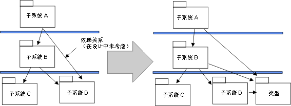
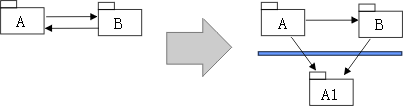

|
目的
|
调整模型的结构，以反映团队组织或实施语言约束。
|
通过处理与实施环境相关的较小策略问题，决定子系统的组织是否需要更改。下面是这种策略问题的一些示例。请注意，如果您决定更改实施子系统的组织，就必须决定是否应转而更新设计模型，或者允许设计模型不同于实施模型。
-
开发团队组织。子系统结构必须允许几个实施者或数个实施团队并行前进，而不会有过多的重叠和不安情况。建议每个实施子系统只归一个团队负责。这意味着您可能会希望将一个子系统分成两个（如果很大），并将两部分分派给两个实施者或两个实施团队来实施，特别是在这两个实施者（或实施团队）有不同的工作版本／发行版周期的情况下。
-
类型的声明。在实施过程中，您可能会意识到，一个子系统需要从另一个子系统导入工作产品，因为类型是在该子系统中声明的。通常，当您使用类型化的编程语言（如 C++、Java 和
Ada）时，就会发生这种情况。在这种情况下，以及一般情况下，将类型声明抽取到单独的子系统中可能是个好想法。
示例
您将一些类型声明从子系统 D 抽取到新的子系统类型中，形成了独立于子系统 D 中公用（可视）工作产品的更改的子系统 A。

类型声明是从子系统 D 中抽取的
.
-
现有的旧代码和组件系统。您可能需要并入旧代码、可重用组件库或者现成产品。如果这些尚未在设计中建模，则必须添加实施子系统。
-
调整依赖关系。假设子系统 A 和子系统 B 相互之间有导入依赖关系。但是，您可能希望让 B 较少依赖于子系统 A 中的更改。抽取 B 导入的 A 的工作产品，并放到较低层的新实施子系统 A1 中。

工作产品从子系统 A 中抽取，并放到新的子系统 A1 中。
现在因为实施子系统不再对设计模型中的包／子系统进行一对一映射，您可以在设计模型中作出相应的更改（如果您已决定使设计模型与实施模型保持高度一致），或者可以跟踪实施和设计模型之间的映射（例如通过可跟踪性或实现依赖关系）。这样的映射是否完成以及如何完成，这是一个应记录在 工作产品：特定于项目的指南中的流程决策。 工作产品：特定于项目的指南中的流程决策。
|